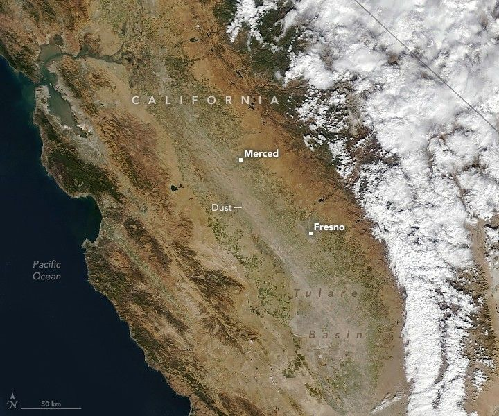

Dusty Skies in California Farm Country
California’s Central Valley is a behemoth of U.S. agriculture. Its farmers grow one-third of the nation’s vegetables and three-quarters of its fruits and nuts, including 400 different commodity crops that represent tens of billions of dollars in value.
However, the amount of land in production fluctuates significantly year to year, with growers leaving some land idle, or fallow, depending on weather, market, and groundwater conditions. In the Central Valley, the amount of fallow land varies by thousands of acres per year, often based on the availability of water for irrigation. Such shifts have implications not just for farmers but for everybody living in the region, new research shows.
In Communications Earth & Environment, scientists detailed a link between fallow farmland and dust storms, showing that idled farmland was the dominant source of human-caused dust storms in California’s Central Valley region between 2008 and 2022.
Dust storms contribute to the accumulation of PM2.5 and PM10—classes of particulate air pollution that are associated with a variety of respiratory and cardiovascular health risks. The particles may also help spread pathogens, including viruses and fungal diseases. Severe dust storms can also lead to near blackout conditions that reduce visibility and make traffic accidents more likely.
“Our findings represent real-world health effects for people in the region, many of whom are farmworkers and spend large amounts of time outside,” said Adeyemi Adebiyi, an assistant professor at the University of California, Merced (UC Merced).
The researchers reported that 88 percent of major human-caused dust events were associated with fallow land. They also found significant increases in both fallow land and dust storms over the study period, which coincided with drought and new limits on how much groundwater can be drawn from ailing aquifers.
On October 11, 2021, the MODIS (Moderate Resolution Imaging Spectroradiometer) on NASA’s Terra satellite captured an image of one of the many dust storms that have affected the region. Dust streamed southeast across the Central Valley, passing through the Tulare Lake Basin, a dried lake home to increasing numbers of fallow fields in recent years. The flood-prone basin has gray clay soils and large numbers of tomato, nut, cotton, and dairy farms.
The OLI (Operational Land Imager) on Landsat 8 captured an image showing examples of fallow fields in the basin. Fallow fields appear gray or brown compared to irrigated green fields nearby.
A more detailed satellite image is centered on the town of Stratford, California. Rectangular farm fields surround the town. Fields of tomato, cotton, and safflower are labeled and mostly appear green. Brown and gray fields are labeled as fallow. A solar farm is visible west of Stratford.
Previous research has documented increases in dustiness in California, but the reasons for the change were not clear. Atmospheric scientists have also studied the relationship between fallow land and dust storms at individual farms or communities, Adebiyi noted. “But our study is the first we know of where a research team has looked at California as a whole and identified a connection between dust storms and fallow land,” Adebiyi said.
The research is based on data from several satellite and ground-based observation networks of dust, as well as the U.S. Department of Agriculture’s Cropland Data Layer. The dust observations were primarily captured by the MODIS on NASA’s Aqua satellite.
Joshua Viers, a UC Merced agriculture water use expert who was not involved in the study, says there are options for farmers who want to limit dust emissions from fallow fields and find alternatives to crops that require large amounts of water. “There’s been a push toward ‘multi-benefit land repurposing’ as farmers look for ways to achieve sustainable groundwater use,” he said.
Some farmers are having success growing drought-tolerant crops such as agave and guayule, which are grown to produce biomaterial for industrial products and latex, he said. Others have started to incorporate agrivoltaics—the co-location of solar panels with drought-tolerant crops—into their business plans.
“Platforms like MODIS and ECOSTRESS, in particular, will allow researchers and farmers to effectively monitor reductions in crop evapotranspiration as farmers transition to drought-tolerant varieties and crops,” Viers said.
Looking forward, Adebiyi plans to use similar techniques to study other parts of the United States with abundant farmland, including the Great Plains and Central Plains, to see if fallow farmland is related to dust storms in other regions, too.